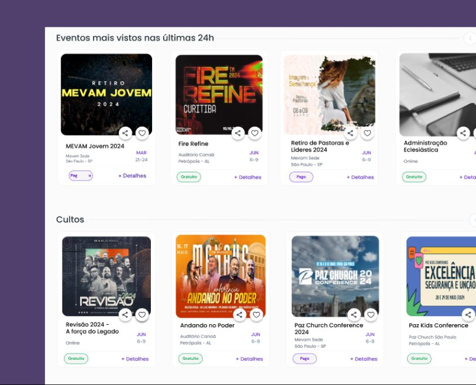

Contexto
O mercado de eventos cristãos operava com soluções genéricas.
Organizadores e participantes utilizavam plataformas amplas, sem filtros relevantes, sem curadoria e sem identidade cultural. Isso resultava em uma experiência fragmentada, pouco confiável e sem senso de pertencimento.
A oportunidade era construir um produto específico para essa comunidade, respeitando seu contexto, valores e comportamento.
O Problema
Plataformas genéricas não atendem comunidades específicas.
Ferramentas existentes eram pensadas para escala ampla, não para profundidade de contexto. O desafio era criar um marketplace que equilibrasse eficiência digital com identidade cultural.
Benchmark
A análise do ecossistema revelou padrões claros de limitação.
Plataformas como Sympla e Eventbrite atendem bem cenários genéricos, mas falham em profundidade de contexto.
O diferencial do produto não estaria apenas na interface, mas no posicionamento e nas regras do marketplace — uma decisão de produto, não só de UX.
 Ver imagem
Ver imagem
Pesquisa
Entrevistas revelaram necessidades além da funcionalidade.
Conduzi entrevistas qualitativas com organizadores e participantes de eventos cristãos. Os comportamentos e expectativas encontrados iam além do que ferramentas existentes oferecem.
Esses insights direcionaram o produto para além de um marketplace funcional — um espaço de curadoria e identidade para uma comunidade real.
 Ver imagem
Ver imagem
Naming
O nome foi uma decisão estratégica de produto.
A marca precisava refletir energia, pertencimento e identidade cristã — e ao mesmo tempo funcionar como um ativo de confiança dentro do marketplace. O processo envolveu co-criação com stakeholders, análise de disponibilidade e definição de atributos de marca.
Arquitetura
Estrutura definida a partir das jornadas reais dos dois lados.
O desafio era equilibrar duas necessidades distintas sem comprometer nenhuma delas. A arquitetura priorizou clareza e relevância, evitando sobrecarga e mantendo foco na experiência da comunidade.

Definição do MVP
Valor percebido, não volume de funcionalidades.
A definição do MVP foi guiada por critério e priorização — priorizamos o que entregava valor real para ambos os lados do marketplace sem inflar o escopo do lançamento.
Também foram definidas regras de curadoria para garantir consistência e qualidade do conteúdo — exclusividade para eventos cristãos, padrões de imagem e controle de qualidade em eventos importados.

Ver imagem